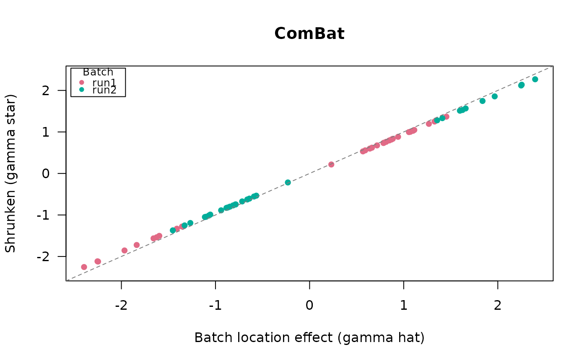

Removes batch effects from a table of continuous values (log-scale
metabolite intensities, clr values, log relative abundances), while
keeping the effects of named covariates: the empirical Bayes location
and scale adjustment of Johnson et al. (2007), a port of sva::ComBat(),
with parametric or non-parametric priors.
Usage
batch_combat(
counts,
batch,
formula = NULL,
data = NULL,
margin = 1L,
norm = "none",
pseudocount = NULL,
parametric = TRUE,
mean_only = FALSE,
ref_batch = NULL,
tol = 1e-04,
max_iters = 1000L,
cpus = n_cpus()
)Arguments
- counts
A numeric table (samples \(\times\) features), or any of the objects listed under Input Types. With
norm = 'none', the values to correct, used as given (any finite numbers); with'clr'or'log', non-negative abundances to transform first.- batch
The batch of each sample: one value per sample (matched to the samples by name when both are named), or the name of a column of
data. At least two batches; a batch of one sample turns onmean_only.- formula
A one-sided formula over the columns of
datanaming the covariates whose effects are kept, such as~ disease + age. DefaultNULL: none. Covariates left out have their differences between batches removed with the batch effects.- data
A data.frame of sample metadata, with the columns that
batchandformulaname. Rows are matched to the samples by name, or else by position.- margin
The margin containing samples.
1if samples are rows,2if samples are columns. Ignored whencountsis a special object class (e.g.phyloseq). Default:1- norm
"none"(the default): correct the values as given."clr": centred log ratios, or"log": log relative abundances (natural logs), computed first, asnormalize()does. ComBat assumes roughly normal values in each batch, so counts should be transformed.- pseudocount
For
norm = 'clr'or'log': added to every value before the log. DefaultNULL: none if there are no zeros, else half the smallest non-zero value, with a warning (asnormalize()). Ignored withnorm = 'none'.- parametric
Shrink the batch effects with parametric priors (normal locations, inverse-gamma scales;
TRUE, the default) or non-parametric ones (each feature's effects are averaged over the other features' estimates, weighted by how well they fit the feature;FALSE). sva'spar.prior.- mean_only
Adjust only the batches' means, not their variances. Default
FALSE. A batch with a single sample makes itTRUE, with a warning (as sva).- ref_batch
NULL(the default), or one of the batches: its values are left unchanged, and the other batches are adjusted to it (sva'sref.batch).- tol
The convergence tolerance of the parametric shrinkage iteration. Default
1e-4, which sva fixes.- max_iters
The most iterations of the parametric shrinkage; more is an error. Default
1000(sva has no cap).- cpus
How many parallel processing threads should be used. The default,
n_cpus(), is the CPU cores this R process may use, within any limits set on it. Results are the same for anycpus.
Value
The corrected table: a dense numeric matrix of class
ecodive_batch in the orientation of counts, with its names, on the
scale of the values corrected (after norm). Attributes:
method"combat".batch_effectsA data frame with a row per feature and batch:
feature,batch,gamma_hatanddelta_hat(the feature's location effect and variance in the batch, on the standardised scale),gamma_staranddelta_star(after shrinkage; 0 and 1 forref_batch).NAfor features not adjusted.adjustedA logical per feature:
FALSEfor features constant within a batch (of two or more samples), which are returned unchanged.mean_onlyWhether only the means were adjusted (
TRUEalso when a batch has one sample).pseudocountThe pseudocount chosen, when
normis'clr'or'log'withpseudocount = NULLand the table has zeros.n_itersWith parametric priors and
mean_only = FALSE, the shrinkage iterations run in each batch.batch_means,batch_means_adjustedFeature \(\times\) batch matrices of the mean values (after
norm), before and after.overall_meansEach feature's mean value over all samples, before.
See batch_mmuphin() for how the class behaves.
Details
The model. Each feature \(y\) is fitted by least squares on the
batch indicators and the covariates, and standardised:
\(s = (y - \bar\alpha - X\beta) / \hat\sigma\), where \(\bar\alpha\)
is the batches' coefficients averaged with weights by batch size (or the
reference batch's) and \(\hat\sigma^2\) the residual variance (divisor
\(n\); with ref_batch, over the reference batch's samples). In each
batch, the location \(\hat\gamma\) (mean of \(s\)) and scale
\(\hat\delta\) (variance) are shrunk over features: with
parametric = TRUE, to their posterior means under a normal prior on
\(\gamma\) and an inverse-gamma prior on \(\delta\) (hyperparameters
by the method of moments), iterating until the largest relative change
is below tol; with parametric = FALSE, to averages of the other
features' estimates, each weighted by the likelihood of this feature's
values under it. The adjusted value is \((s - \gamma^*) /
\sqrt{\delta^*} \cdot \hat\sigma + \bar\alpha + X\beta\). Features
constant within a batch are left unchanged.
Which method. ComBat assumes continuous, roughly normal values: use
it on log-transformed metabolomics or proteomics, or on clr or log
relative abundances. For count tables with many zeros, batch_mmuphin()
(zero-inflated ComBat on log relative abundances, re-closed to counts)
is designed for microbiome data. As there, covariates that differ
between batches must be named in formula, and corrected values are for
exploration and pooled analyses rather than for testing.
The non-parametric priors take \(O(F^2 n)\) time for \(F\) features and \(n\) samples (threaded over features and batches).
Differences from sva
batch_combat() ports sva 3.60.0's ComBat() (Artistic License 2.0;
Jeffrey T. Leek, W. Evan Johnson and the other sva authors). Its
corrected values agree with ComBat() to rounding, except:
countsis samples \(\times\) features by default (margin); sva takes features \(\times\) samples.normcan transform it first.formulaanddatagive the covariates, instead of a model matrixmod;batchanddatafollow ecodive's per-sample rules. Batches are the levels of a factor, else the sorted values.The non-parametric priors weigh the other features' estimates by their likelihoods on the log scale. sva multiplies the densities, which underflow to zero for large batches and then give
NaNfor every feature; where sva's results are finite, the two agree to rounding.tolandmax_itersare arguments: sva fixes the tolerance at1e-4and has no cap on the iterations. An iteration that meets aNaNstops with an error (sva: "missing value where TRUE/FALSE needed").Missing values (
NA) are refused; sva fits around them.A batch of one sample turns on
mean_onlywith a warning (sva: a message); features constant within a batch are left unchanged without a message, and marked in theadjustedattribute. Nothing else is printed.The least-squares fits use a QR decomposition where sva solves the normal equations, so very ill-conditioned covariates may agree less closely.
A constant covariate is confounded with the batches (an error); sva drops a covariate column of all ones.
prior.plotsandBPPARAMare not arguments:plot()draws the diagnostics, andcpussets the threads.
Same names in other packages: none. sva's own function is
ComBat().
Input Types
The counts parameter is designed to accept a simple numeric matrix, but
seamlessly supports objects from the following biological data packages:
phyloseqrbiomSummarizedExperimentTreeSummarizedExperiment
For large datasets, standard matrix operations may be slow. See
vignette('performance') for details on using optimized formats
(e.g. sparse matrices) and parallel processing.
References
Johnson, W. E., Li, C., & Rabinovic, A. (2007). Adjusting batch effects in microarray expression data using empirical Bayes methods. Biostatistics, 8, 118–127. doi:10.1093/biostatistics/kxj037
Leek, J. T., Johnson, W. E., Parker, H. S., Jaffe, A. E., & Storey, J. D. (2012). The sva package for removing batch effects and other unwanted variation in high-throughput experiments. Bioinformatics, 28, 882–883. doi:10.1093/bioinformatics/bts034
Wang, Y., & Lê Cao, K.-A. (2020). Managing batch effects in microbiome data. Briefings in Bioinformatics, 21, 1954–1970. doi:10.1093/bib/bbz105
Examples
# Two runs of ten samples; the second reads ten features 3x higher.
set.seed(1)
counts <- matrix(
rpois(20 * 30, 20), 20, 30,
dimnames = list(paste0('S', 1:20), paste0('F', 1:30)) )
batch <- rep(c('run1', 'run2'), each = 10)
counts[11:20, 1:10] <- counts[11:20, 1:10] * 3
# ComBat on clr values.
x <- batch_combat(counts, batch, norm = 'clr')
x
#> # A matrix: 20 samples × 30 features
#> # Batch-corrected (ComBat)
#> # 30 of 30 features adjusted
#> F1 F2 F3 F4 F5 F6 F7 F8 F9
#> S1 0.207 0.402 -0.0685 0.744 0.152 -0.105 0.297 0.23 0.299
#> S2 0.609 -0.114 0.531 0.542 0.623 0.34 0.233 0.283 0.176
#> S3 0.617 0.556 0.357 0.257 0.554 0.348 -0.0477 0.0365 0.467
#> S4 0.38 0.556 0.457 0.336 0.623 0.265 0.331 0.0904 0.747
#> S5 -0.0179 0.209 0.41 0.509 0.47 0.498 0.2 0.79 0.204
#> S6 0.435 0.241 0.181 0.564 0.0206 0.33 0.174 0.378 0.0453
#> S7 0.579 0.404 0.232 0.501 0.507 0.333 0.216 0.577 0.225
#> S8 0.512 0.321 0.668 0.426 0.605 0.184 0.521 0.409 0.196
#> S9 0.217 0.404 0.62 0.0941 0.448 0.292 0.685 0.239 0.197
#> S10 0.564 0.322 0.211 0.222 0.122 0.306 0.37 0.304 0.418
#> S11 0.476 -0.042 0.157 0.599 0.136 0.517 0.717 0.525 0.652
#> S12 0.251 0.539 0.0829 0.507 0.0607 0.327 0.447 0.74 0.644
#> S13 0.284 0.239 0.791 0.291 0.682 0.304 0.181 0.534 0.243
#> S14 0.33 0.598 0.396 0.282 0.569 0.183 0.109 0.617 -0.361
#> S15 0.529 0.321 0.618 0.322 0.65 0.683 0.209 0.0967 0.323
#> S16 0.232 0.692 0.466 0.591 0.5 0.261 0.246 0.265 0.533
#> S17 0.551 0.446 0.202 0.252 0.697 0.458 0.348 -0.0424 0.308
#> S18 0.604 0.291 0.0954 0.678 0.337 0.0493 0.235 0.417 0.294
#> S19 0.629 0.479 0.702 0.487 0.436 0.126 0.513 0.406 0.34
#> S20 0.588 0.176 0.452 0.618 0.438 0.302 0.474 0.193 0.435
#> # … 21 more columns: F10, F11, F12, F13, F14, F15, F16, F17, F18, F19, F20,
#> # F21, F22, F23, F24, F25, F26, F27, F28, F29, and 1 more
#> # Attributes: method, batch_effects, adjusted, mean_only, n_iters,
#> # batch_means, batch_means_adjusted, overall_means
# Batch's share of the variation, before and after.
clr <- normalize(counts, 'clr')
permanova(euclidean(clr), batch)$statistic
#> F
#> 28.01524
permanova(euclidean(x), batch)$statistic
#> F
#> 0.09191192
plot(x)

# Non-parametric priors, with run1 as the reference.
batch_combat(clr, batch, parametric = FALSE, ref_batch = 'run1')
#> # A matrix: 20 samples × 30 features
#> # Batch-corrected (ComBat)
#> # 30 of 30 features adjusted
#> F1 F2 F3 F4 F5 F6 F7 F8 F9
#> S1 -0.139 0.0239 -0.407 0.395 -0.199 -0.487 -0.139 -0.139 -0.0815
#> S2 0.304 -0.517 0.22 0.176 0.304 -0.0249 -0.207 -0.082 -0.207
#> S3 0.313 0.185 0.0381 -0.134 0.229 -0.016 -0.508 -0.341 0.0894
#> S4 0.0516 0.185 0.143 -0.0484 0.303 -0.103 -0.103 -0.285 0.374
#> S5 -0.386 -0.178 0.0934 0.14 0.14 0.14 -0.243 0.45 -0.178
#> S6 0.112 -0.146 -0.146 0.199 -0.34 -0.0344 -0.271 0.0169 -0.34
#> S7 0.271 0.0254 -0.0923 0.131 0.18 -0.0317 -0.226 0.226 -0.157
#> S8 0.197 -0.0611 0.364 0.0501 0.284 -0.186 0.101 0.0501 -0.186
#> S9 -0.128 0.0258 0.314 -0.311 0.117 -0.0742 0.277 -0.128 -0.185
#> S10 0.253 -0.0602 -0.114 -0.171 -0.232 -0.0602 -0.0602 -0.0602 0.0399
#> S11 0.112 -0.413 -0.2 0.14 -0.217 0.156 0.208 0.147 0.187
#> S12 -0.0939 0.0819 -0.269 0.059 -0.287 0.00485 -0.0206 0.339 0.18
#> S13 -0.0634 -0.174 0.393 -0.131 0.285 -0.0139 -0.246 0.155 -0.181
#> S14 -0.0211 0.132 0.0232 -0.139 0.181 -0.11 -0.307 0.229 -0.725
#> S15 0.162 -0.104 0.231 -0.104 0.256 0.289 -0.222 -0.234 -0.109
#> S16 -0.112 0.212 0.0884 0.133 0.118 -0.0479 -0.19 -0.0839 0.0805
#> S17 0.181 0.0032 -0.158 -0.165 0.299 0.109 -0.104 -0.358 -0.123
#> S18 0.23 -0.129 -0.258 0.209 -0.0323 -0.217 -0.2 0.0506 -0.135
#> S19 0.253 0.0311 0.309 0.0418 0.0584 -0.156 0.0357 0.0412 -0.094
#> S20 0.215 -0.228 0.0753 0.156 0.0603 -0.0156 0.00197 -0.149 -0.00814
#> # … 21 more columns: F10, F11, F12, F13, F14, F15, F16, F17, F18, F19, F20,
#> # F21, F22, F23, F24, F25, F26, F27, F28, F29, and 1 more
#> # Attributes: method, batch_effects, adjusted, mean_only, batch_means,
#> # batch_means_adjusted, overall_means